Passo a passo
- Abrir a tela. No menu Tabelas de apoio, clique em Regra Estabilidade. A tela abre com o quadro "Pesquisa" e o quadro "Filtro Produto / Material": Tipo Item Análise, Item Análise, Código e Tipo Análise (Físico-Químico e Microbiológica, caixas de marcar), e os botões PESQUISAR, LIMPAR e INCLUIR.
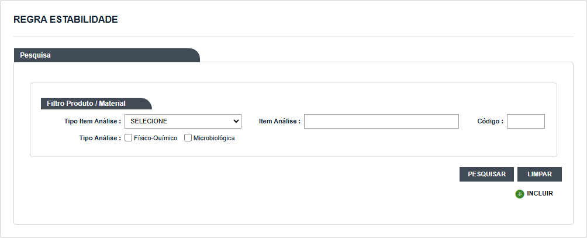
A imagem mostra o título REGRA ESTABILIDADE, os filtros do quadro "Filtro Produto / Material" e os botões PESQUISAR, LIMPAR e INCLUIR, sem lista.
Para ver as regras que já existem, clique em PESQUISAR sem preencher nenhum filtro: a lista traz todas (7 regras na rodada de 17/11/2026 e 9 em 20/11/2026, porque outras rodadas incluíram regras).
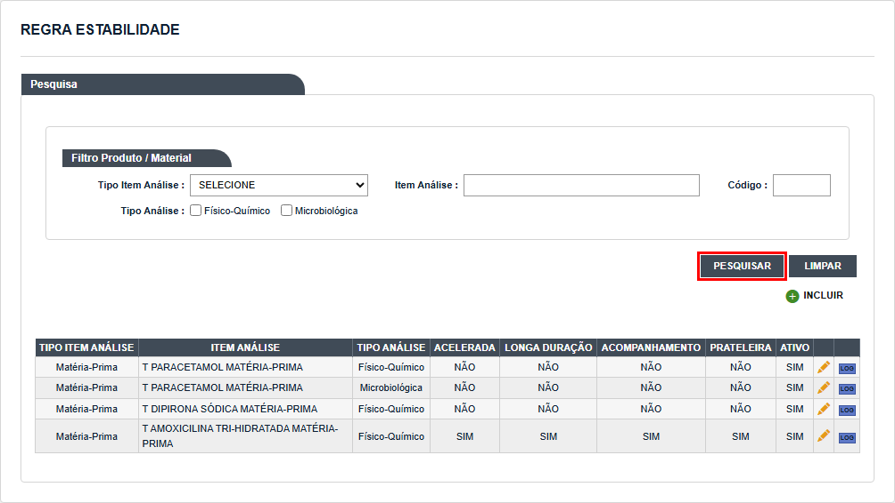
A imagem mostra a lista com TIPO ITEM ANÁLISE, ITEM ANÁLISE, TIPO ANÁLISE, ACELERADA, LONGA DURAÇÃO, ACOMPANHAMENTO, PRATELEIRA e ATIVO, e, no fim de cada linha, o lápis (editar) e o selo azul LOG (histórico), inteiros, sem corte na lista.
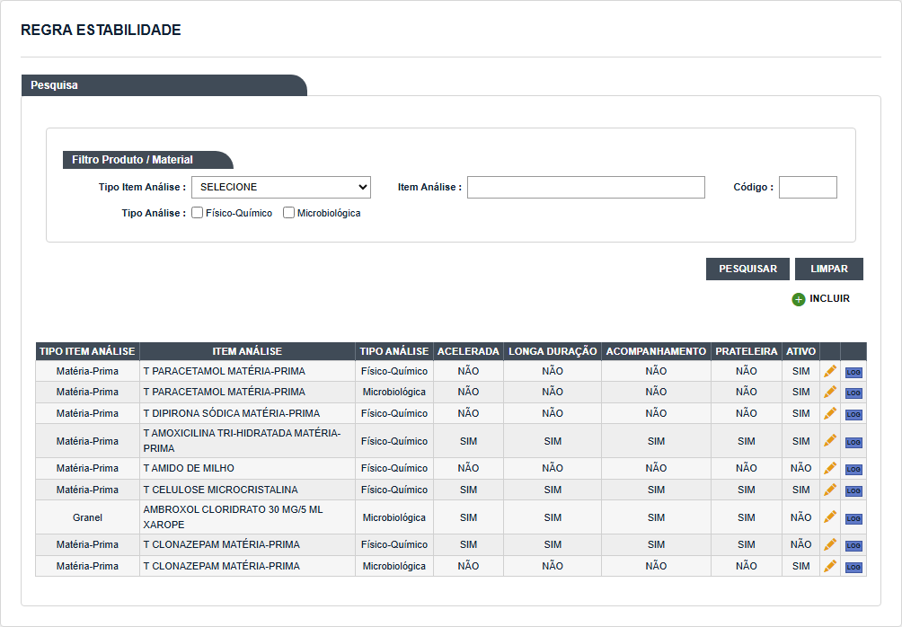
A imagem (20/11/2026) mostra a lista com 9 linhas (Matéria-Prima e Granel; Físico-Químico e Microbiológico) e as colunas TIPO ITEM ANÁLISE, ITEM ANÁLISE, TIPO ANÁLISE, ACELERADA, LONGA DURAÇÃO, ACOMPANHAMENTO, PRATELEIRA e ATIVO, com lápis e LOG no fim de cada linha. Igual ao manual de 17/11/2026.
- Tentar incluir sem escolher o item. Clique em INCLUIR sem escolher o tipo de item e o item. Aparece a faixa rosa "Selecione o Tipo Item Análise e um Item Análise da lista antes de incluir.".
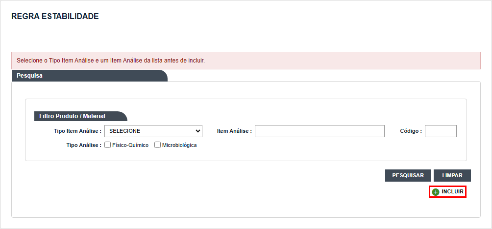
A imagem mostra a faixa rosa com essa mensagem acima do quadro "Pesquisa".
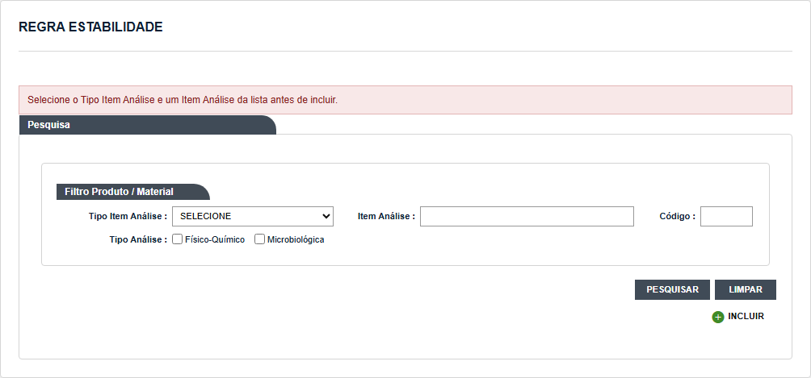
A imagem (20/11/2026) mostra a mesma faixa rosa, "Selecione o Tipo Item Análise e um Item Análise da lista antes de incluir.", com o botão INCLUIR destacado.
Item digitado sem escolher na lista (20/11/2026): se o item é digitado ("T.MED-001") mas não é escolhido na sugestão, o Código fica vazio e o INCLUIR recusa com a mesma faixa.
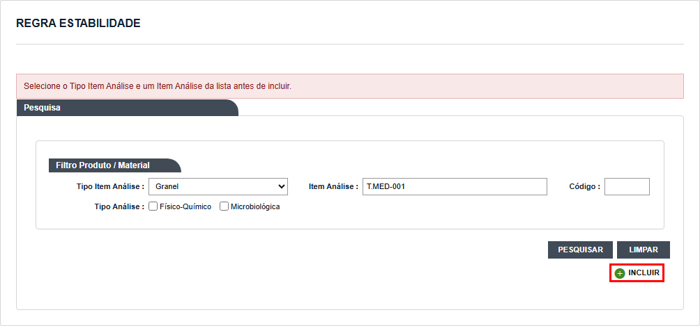
A imagem mostra o tipo Granel, o texto "T.MED-001" no campo Item Análise, o Código vazio e a faixa de recusa no alto.
- Escolher o item e incluir. Escolha o Tipo Item Análise (por exemplo, Matéria-Prima ou Granel), digite o item (a sugestão aparece a partir de 2 caracteres, por exemplo "T.", e depende do tipo escolhido; "T " com espaço não devolve nada) e escolha na lista; o Código preenche sozinho.
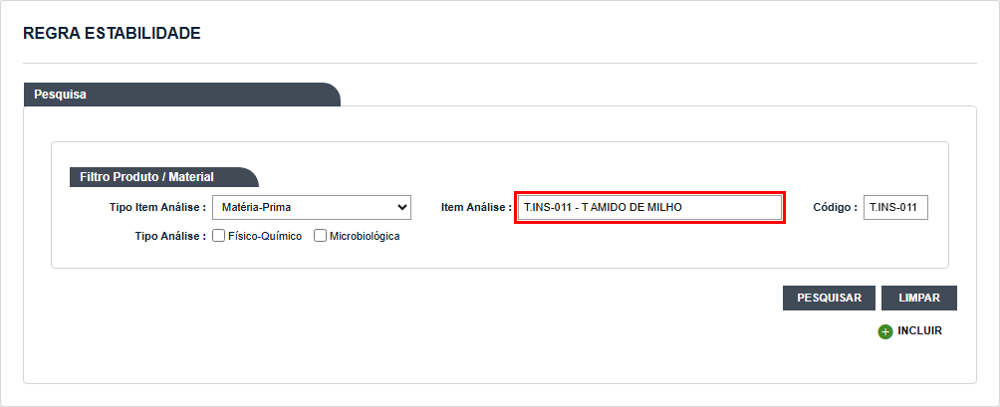
A imagem mostra o tipo Matéria-Prima, o item T.INS-011 escolhido e o Código preenchido.
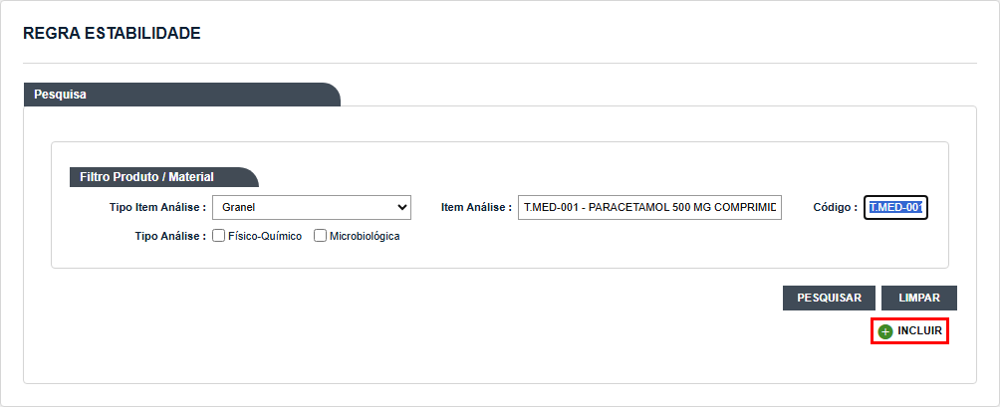
A imagem (20/11/2026) mostra o tipo Granel, o item "T.MED-001 - PARACETAMOL 500 MG COMPRIMIDO" escolhido e o Código preenchido (em azul, estado do campo logo depois da escolha). As sugestões de Produto Acabado e Semi-Elaborado vêm vazias (nenhum item desses tipos está cadastrado), então a regra de um produto acabado não pôde ser testada.
Clique em INCLUIR. Abre o formulário REGRA DE ESTABILIDADE: ITEM (bloqueado), TIPO ANÁLISE (já abre em Físico-Químico; a lista também tem Microbiológico), ATIVO (SIM marcado) e o quadro Estabilidade (dias) com o botão INCLUIR TEMPO e a grade T, ACELERADA, LONGA DURAÇÃO, ACOMPANHAMENTO, PRATELEIRA. Os botões são SALVAR e VOLTAR.
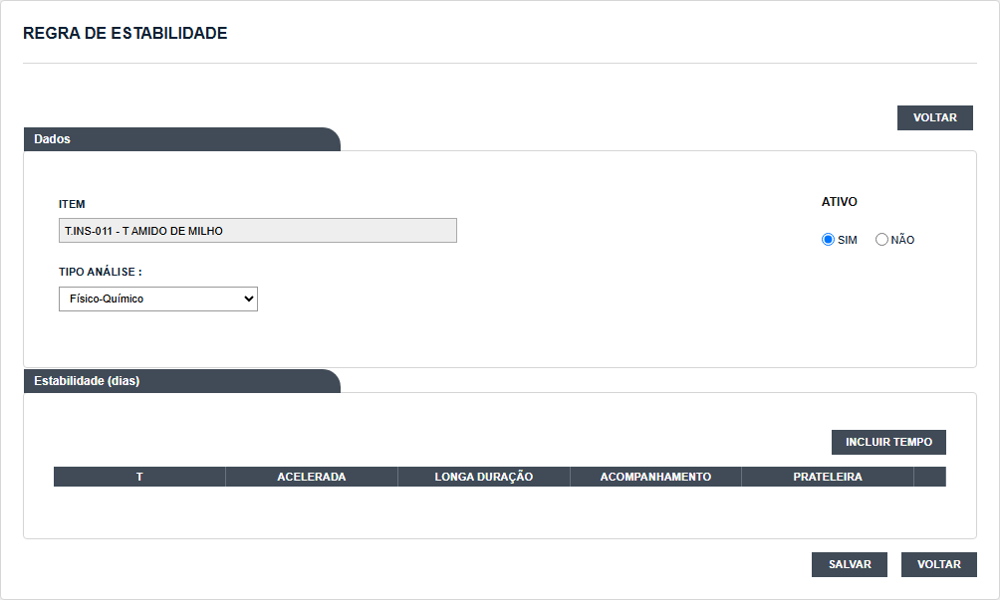
A imagem mostra o item bloqueado, o tipo Físico-Químico, Ativo = SIM e a grade de tempos vazia. Nesta etapa a regra ainda não foi gravada.
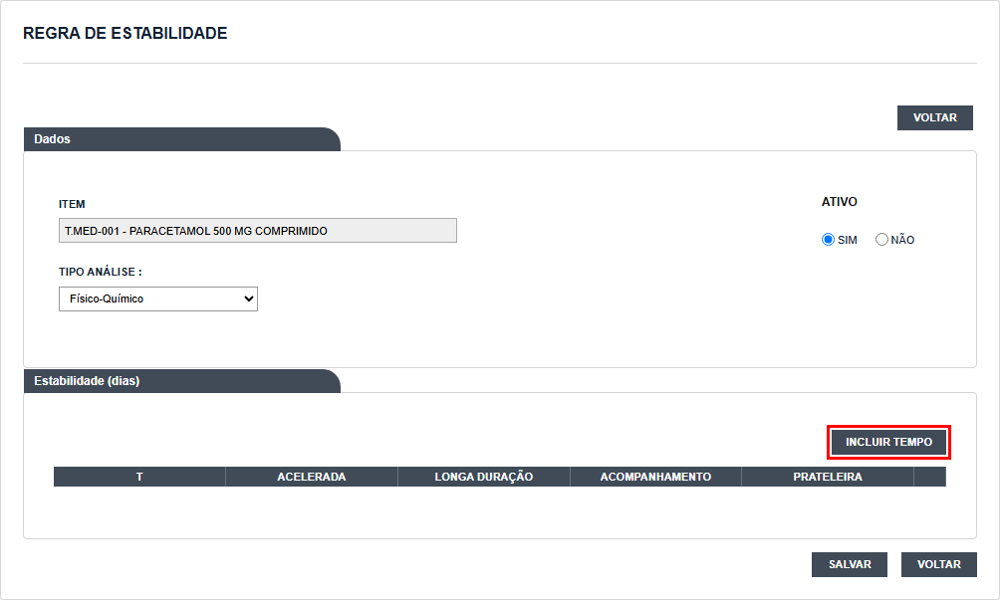
A imagem (20/11/2026) mostra o item "T.MED-001 - PARACETAMOL 500 MG COMPRIMIDO" bloqueado, o tipo Físico-Químico, Ativo = SIM e a grade vazia, com INCLUIR TEMPO destacado.
- Incluir os tempos. Clique em INCLUIR TEMPO para cada ponto do estudo. A primeira linha é o T0, a seguinte é o T1 etc. Só o número do tempo (T) é bloqueado: os quatro campos de dias do T0 vêm vazios e é preciso digitar 0 em cada um (sem isso, o sistema recusa; ver "O que o sistema recusa"). Digite os dias de cada tipo de estudo. Só a última linha tem o X (remover tempo).
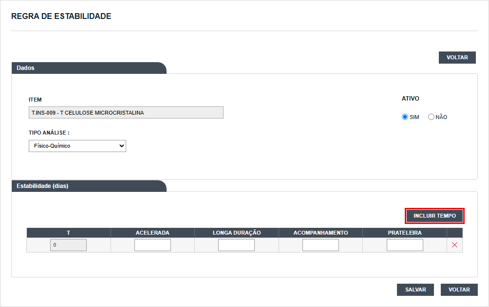
A imagem mostra o item T.INS-009 com a linha T0 (o número 0 bloqueado) e os quatro campos de dias em branco, com o botão INCLUIR TEMPO destacado.
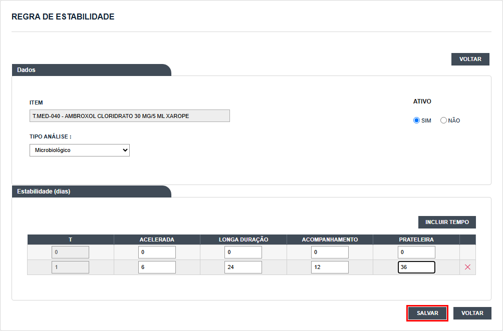
A imagem mostra o item T.MED-040, tipo Microbiológico, com T0 (0, 0, 0, 0) e T1 (acelerada 6, longa duração 24, acompanhamento 12, prateleira 36), com um X vermelho na linha T1 e o botão SALVAR destacado.
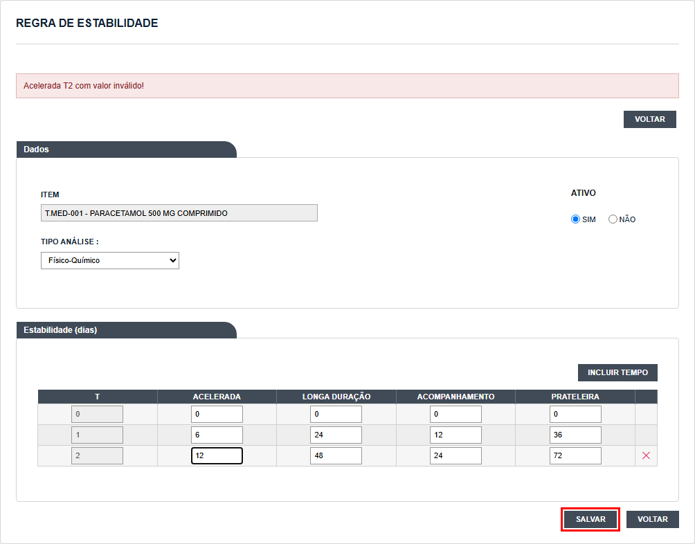
A imagem (20/11/2026) mostra o T.MED-001, tipo Físico-Químico, com T0 (0, 0, 0, 0), T1 (6, 24, 12, 36) e T2 (12, 48, 24, 72), o X vermelho na última linha e SALVAR destacado.
- Salvar. Clique em SALVAR. O botão passa a "SALVANDO..." enquanto grava. Não há pergunta de confirmação, nem campo de justificativa. Ao terminar, a tela volta à pesquisa vazia, sem nenhuma mensagem de sucesso (DV-CQ-N-013): para saber se gravou, é preciso pesquisar.

A imagem mostra a tela de pesquisa com os filtros limpos e sem lista, sem faixa de sucesso.

A imagem (20/11/2026) mostra a mesma pesquisa vazia, sem pergunta de confirmação antes e sem mensagem depois: o reteste do DV-CQ-N-013 repete.
- Conferir na lista. Pesquise pelo item. A lista mostra TIPO ITEM ANÁLISE, ITEM ANÁLISE, TIPO ANÁLISE, ACELERADA, LONGA DURAÇÃO, ACOMPANHAMENTO, PRATELEIRA (cada um "SIM" quando há dias maiores que zero, "NÃO" quando não há) e ATIVO. As colunas finais trazem o lápis (editar) e o selo azul LOG (histórico). Não há ícone de excluir a regra.
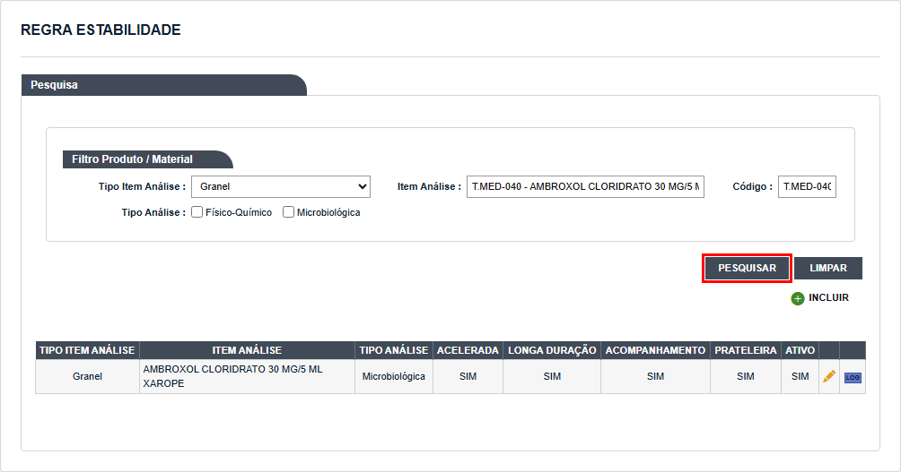
A imagem mostra o filtro preenchido (Granel, T.MED-040) e a regra do item, Microbiológica, com SIM nos quatro tipos de estudo e SIM em Ativo, com o lápis e o selo LOG visíveis.
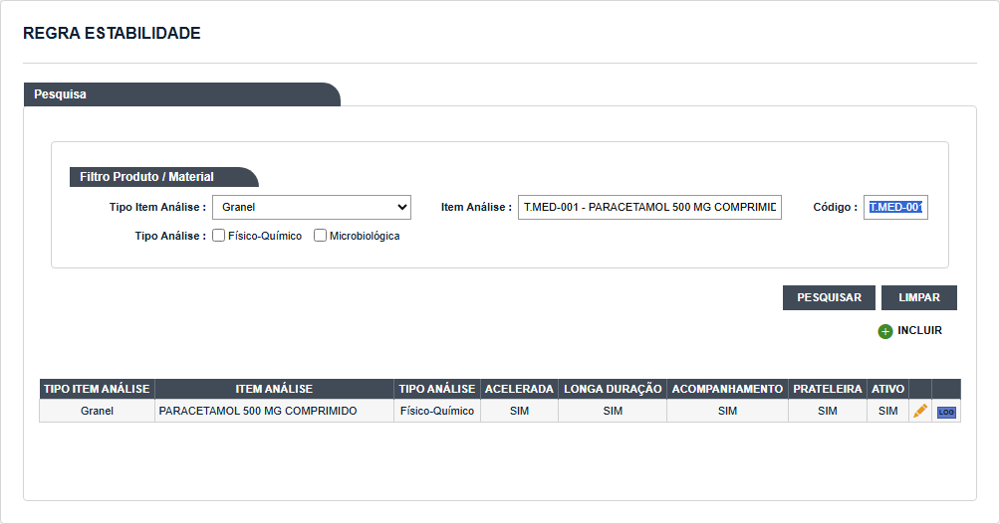
A imagem (20/11/2026) mostra a regra do T.MED-001 Físico-Químico recém-gravada (SIM nos quatro tipos de estudo e em Ativo).
O mesmo item aceita as duas regras (20/11/2026): depois de gravar a Físico-Química, o mesmo T.MED-001 recebeu uma regra Microbiológica (T0 zeros e T1 7/30/15/40), e a lista mostra as duas linhas.
A imagem mostra o formulário do T.MED-001 com o tipo Microbiológico, T0 (0, 0, 0, 0) e T1 (7, 30, 15, 40), com SALVAR destacado.
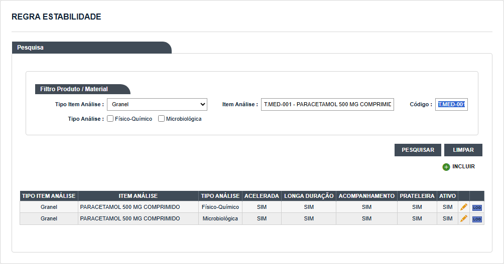
A imagem mostra, para o Granel T.MED-001, a linha Físico-Químico e a linha Microbiológica, ambas ativas.
- Alterar. Clique no lápis. O formulário abre com os tempos gravados.
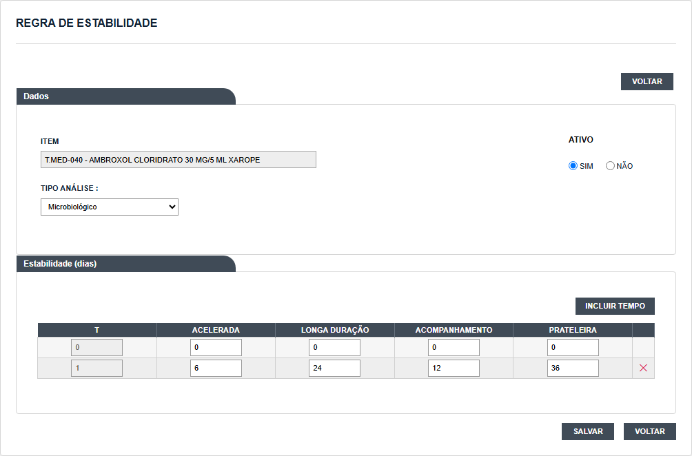
A imagem mostra a regra do item T.MED-040 aberta, com T0 e T1 gravados.
Para acrescentar um tempo, clique em INCLUIR TEMPO e digite os dias; clique em SALVAR. Como no incluir, não há justificativa, confirmação nem mensagem de sucesso (DV-CQ-N-004 e DV-CQ-N-013).
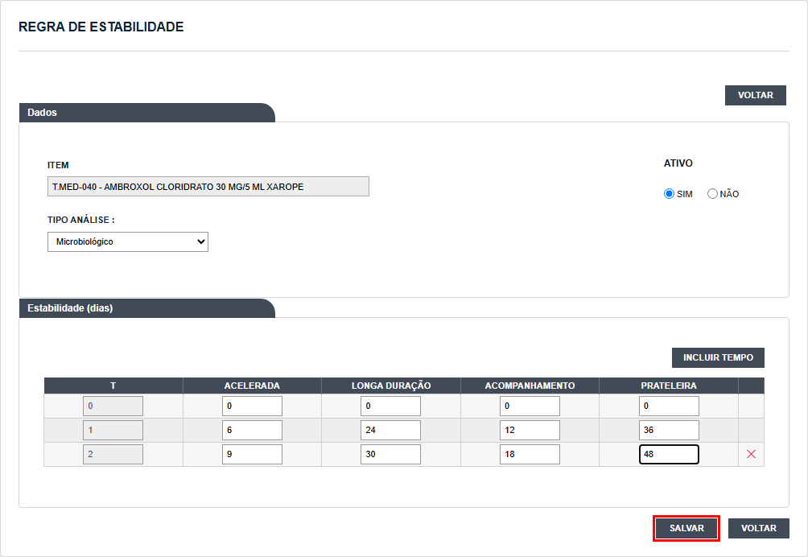
A imagem mostra o tempo T2 acrescentado (9, 30, 18, 48), pronto para salvar.
- Ver o histórico. Na lista, clique no selo azul LOG (dica "Consultar LOG"). Diferente do legado (que respondia "NÃO EXISTE LOG DE ALTERAÇÃO PARA ESTE REGISTRO."), o histórico agora existe.
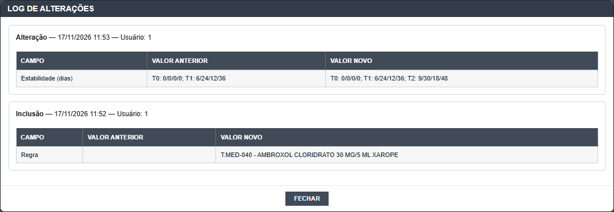
A imagem mostra a janela "LOG DE ALTERAÇÕES" com a Alteração (campo "Estabilidade (dias)": antes "T0: 0/0/0/0; T1: 6/24/12/36", depois com "T2: 9/30/18/48", Usuário: 1) e a Inclusão (campo "Regra": "T.MED-040 - AMBROXOL CLORIDRATO 30 MG/5 ML XAROPE"). O usuário aparece como o número 1 (DV-CQ-N-006) e não há linha de justificativa.
- Inativar (no lugar de excluir). A tela não tem botão para excluir a regra; para tirá-la de uso, abra-a pelo lápis, marque ATIVO = NÃO e clique em SALVAR. Funciona também em regra sem nenhum tempo (no legado dava erro, DV-CQ-041). Também não pede justificativa nem mostra mensagem.
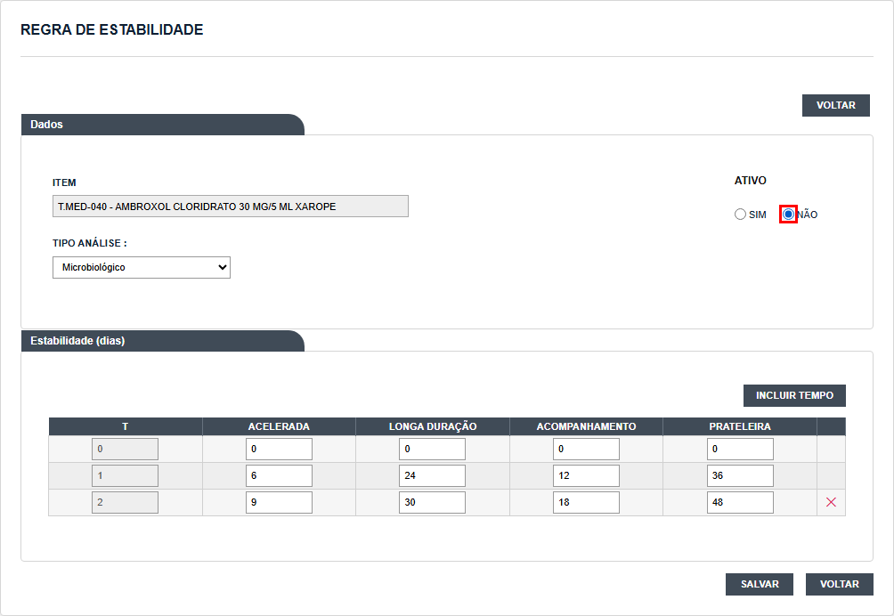
A imagem mostra o formulário da regra com ATIVO = NÃO marcado.
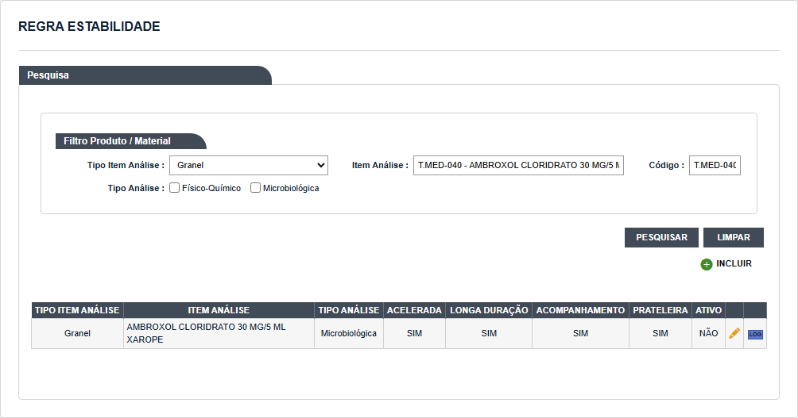
A imagem mostra a regra do item T.MED-040 com ATIVO = NÃO na lista.
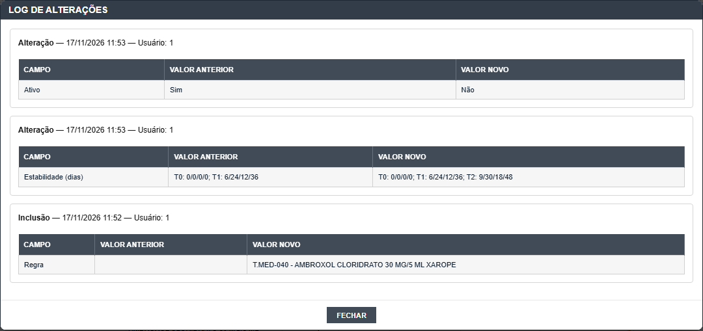
A imagem mostra o histórico com a nova linha "Ativo: Sim → Não", além da alteração dos tempos e da inclusão, todas com "Usuário: 1".
-
Pesquisar com filtros. Marcar só Microbiológica traz só as regras microbiológicas (inclusive a inativa); LIMPAR esvazia os filtros e a lista. Uma pesquisa sem regra mostra "A pesquisa não retornou nenhum resultado.".
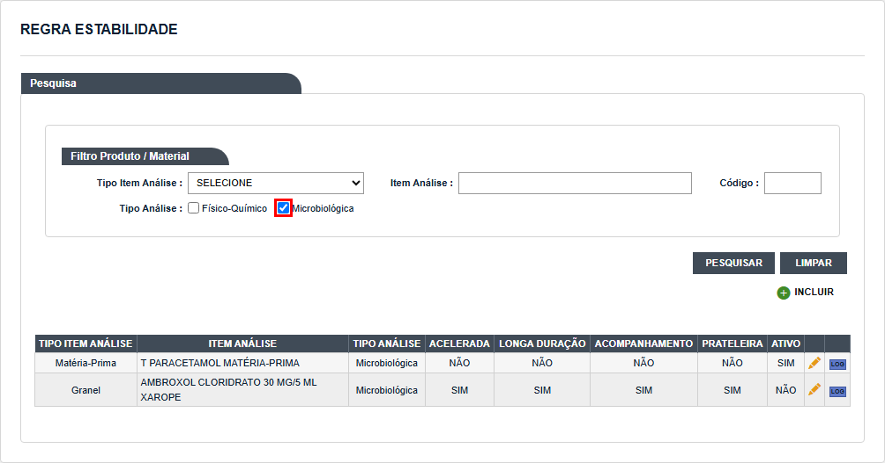
Filtro Microbiológica · clique para ampliar A imagem mostra a pesquisa com apenas a caixa Microbiológica marcada.
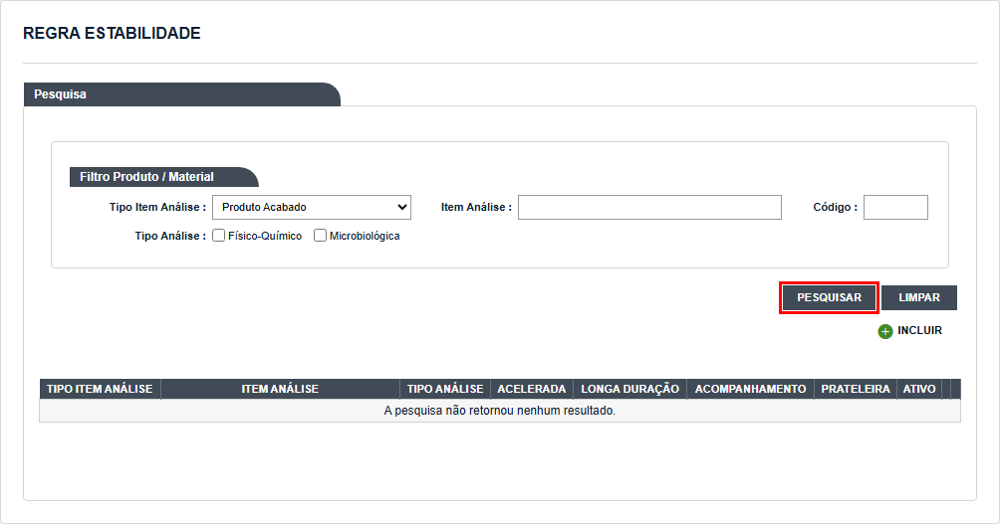
Pesquisa sem resultado · clique para ampliar A imagem mostra a mensagem de que a pesquisa por Produto Acabado não retornou resultado (nenhuma regra cadastrada para esse tipo).